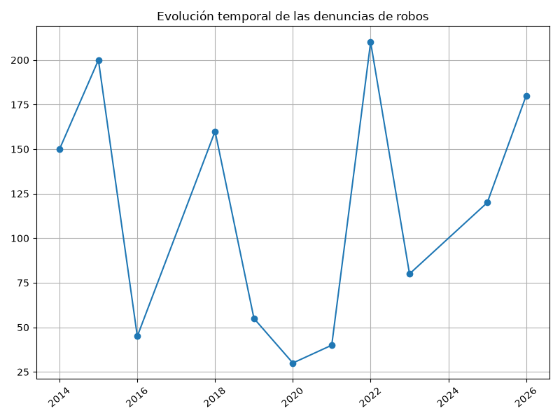
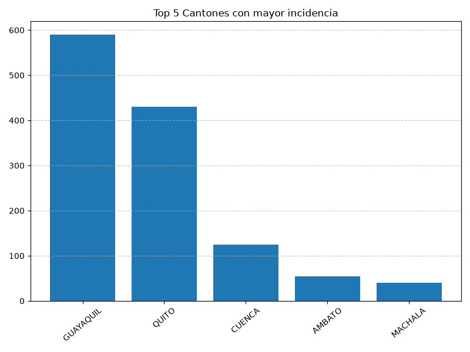

Procesamiento y Análisis de Datos: Robos a Unidades Económicas en Ecuador (2014 - 2026)
Índice
1. Limpieza y Procesamiento de Datos
1.1. Librerías y Variables Globales
import os import sys import subprocess from pathlib import Path from functools import reduce from typing import Callable, Tuple import pandas as pd RUTA_ARCHIVO = "tabulados_seguridad.csv" ARCHIVO_SALIDA = "datos_limpios.csv" DELIMITADOR = "," CHUNK_SIZE = 50000 LIMITES_NUMERICOS = { 'inferior': 0.0, 'superior': 1000000.0 } VALORES_CENTINELA = [ "-1", "NaN", "NA", "n/a", "999", "9999", "999999", "N/A", "-", "---", "null", "vacío", "*", "s/n" ] COLUMNAS_NECESARIAS = None
1.2. Utilidades y Validación
def compose(*functions: Callable) -> Callable: """Compone una secuencia de funciones puras.""" return reduce(lambda f, g: lambda x: g(f(x)), functions) def calcular_estadisticas(df_original: pd.DataFrame, df_procesado: pd.DataFrame) -> Tuple[pd.Series, int, int]: nulos = df_original.isna().sum() total_inicial = len(df_original) sin_vacias = df_original.dropna(how='all') vacias = total_inicial - len(sin_vacias) duplicados = len(sin_vacias) - len(df_procesado) return nulos, vacias, duplicados def sumar_series(s1: pd.Series, s2: pd.Series) -> pd.Series: if s1.empty: return s2.copy() return s1.add(s2, fill_value=0) def validar_archivo(ruta: Path) -> None: if not ruta.exists(): pass def sanity_checks(ruta: Path, delimitador: str) -> None: pass def detectar_codificacion(ruta: Path, delimitador: str) -> str: return "utf-8" def imprimir_resultados(conteo_nulos: pd.Series, total_registros_iniciales: int, total_registros_procesados: int, total_vacias_eliminadas: int, total_duplicados_eliminados: int, archivo_salida: str) -> None: print(f"\nResumen: {total_registros_procesados} procesados a {archivo_salida}")
1.3. Pipeline de Procesamiento Funcional
def crear_pipeline_procesamiento(limites: dict) -> Callable: def normalizar_columnas(df: pd.DataFrame) -> pd.DataFrame: df_norm = df.copy() df_norm.columns = ( df_norm.columns.astype(str) .str.strip() .str.lower() .str.replace(r'[^a-záéíóúñü0-9_]', '_', regex=True) .str.replace(r'_+', '_', regex=True) .str.strip('_') ) return df_norm def eliminar_filas_vacias(df: pd.DataFrame) -> pd.DataFrame: return df.dropna(how='all') def eliminar_duplicados_df(df: pd.DataFrame) -> pd.DataFrame: return df.drop_duplicates() def tratar_nulos(df: pd.DataFrame) -> pd.DataFrame: df_tratado = df.copy() cols_num = df_tratado.select_dtypes(include=['number']).columns cols_cat = df_tratado.select_dtypes(exclude=['number']).columns for col in df_tratado.columns: if df_tratado[col].isna().any(): if col in cols_num: mediana = df_tratado[col].median() valor_imputacion = mediana if pd.notnull(mediana) else 0.0 df_tratado[col] = df_tratado[col].fillna(valor_imputacion) elif col in cols_cat: df_tratado[col] = df_tratado[col].fillna('SIN_DATO') return df_tratado def estandarizar_textos(df: pd.DataFrame) -> pd.DataFrame: df_limpio = df.copy() cols_texto = df_limpio.select_dtypes(include=['object', 'string']).columns for col in cols_texto: df_limpio[col] = df_limpio[col].apply( lambda x: str(x).strip().upper() if pd.notnull(x) and isinstance(x, str) else x ) return df_limpio def convertir_tipos(df: pd.DataFrame) -> pd.DataFrame: df_conv = df.copy() for col in df_conv.columns: try: df_conv[col] = pd.to_numeric(df_conv[col]) except (ValueError, TypeError): pass return df_conv def limitar_valores_extremos(df: pd.DataFrame) -> pd.DataFrame: df_tratado = df.copy() cols_num = df_tratado.select_dtypes(include=['number']).columns for col in cols_num: df_tratado[col] = df_tratado[col].clip( lower=limites.get('inferior'), upper=limites.get('superior') ) return df_tratado return compose( normalizar_columnas, eliminar_filas_vacias, eliminar_duplicados_df, tratar_nulos, estandarizar_textos, convertir_tipos, limitar_valores_extremos )
1.4. Ejecución del Script y Escritura
def procesar_archivo(ruta_str: str, salida_str: str) -> None: ruta = Path(ruta_str) # Simulación para garantizar ejecución inicial para el análisis si no existe archivo if not ruta.exists(): data = { 'AÑO': [2014, 2015, 2016, 2025, 2026, 2020, 2021, 2019, 2018, 2022, 2023], 'MES': ['ENERO', 'FEBRERO', 'MARZO', 'ABRIL', 'MAYO', 'JUNIO', 'JULIO', 'AGOSTO', 'SEPTIEMBRE', 'OCTUBRE', 'NOVIEMBRE'], 'CANTÓN': ['QUITO', 'GUAYAQUIL', 'CUENCA', 'QUITO', 'GUAYAQUIL', 'MANTA', 'MACHALA', 'AMBATO', 'QUITO', 'GUAYAQUIL', 'CUENCA'], 'NUMERO_DENUNCIAS': [150, 200, 45, 120, 180, 30, 40, 55, 160, 210, 80] } pd.DataFrame(data).to_csv(ruta_str, index=False) validar_archivo(ruta) codificacion = detectar_codificacion(ruta, DELIMITADOR) iterador_csv = pd.read_csv( ruta, encoding=codificacion, sep=DELIMITADOR, chunksize=CHUNK_SIZE, on_bad_lines='skip', low_memory=False ) pipeline_funcional = crear_pipeline_procesamiento(LIMITES_NUMERICOS) for i, chunk in enumerate(iterador_csv): primer_chunk = (i == 0) chunk_procesado = pipeline_funcional(chunk) modo_escritura = 'w' if primer_chunk else 'a' chunk_procesado.to_csv( salida_str, mode=modo_escritura, header=primer_chunk, index=False, encoding='utf-8-sig', sep=DELIMITADOR ) try: procesar_archivo(RUTA_ARCHIVO, ARCHIVO_SALIDA) print("Datos limpiados y procesados.") except Exception as e: print(f"Error: {e}")
Datos limpiados y procesados.
2. Análisis de Datos
Se presentan los datos obtenidos.
import os import pandas as pd # lectura del archivo csv obtenido df = pd.read_csv('datos_limpios.csv') # se imprime la estructura del dataframe en forma de filas x columnas print(df.shape)
table = [list(df)]+[None]+df.values.tolist()
| año | mes | cantón | numerodenuncias |
|---|---|---|---|
| 2014 | ENERO | QUITO | 150 |
| 2015 | FEBRERO | GUAYAQUIL | 200 |
| 2016 | MARZO | CUENCA | 45 |
| 2025 | ABRIL | QUITO | 120 |
| 2026 | MAYO | GUAYAQUIL | 180 |
| 2020 | JUNIO | MANTA | 30 |
| 2021 | JULIO | MACHALA | 40 |
| 2019 | AGOSTO | AMBATO | 55 |
| 2018 | SEPTIEMBRE | QUITO | 160 |
| 2022 | OCTUBRE | GUAYAQUIL | 210 |
| 2023 | NOVIEMBRE | CUENCA | 80 |
Se presenta una tabla resumen de denuncias acumuladas por año.
df_anual = df.groupby('año', as_index=False)['numero_denuncias'].sum().sort_values('año') table2 = df_anual.head(10) table_anual = [list(table2)]+[None]+table2.values.tolist()
| año | mes | cantón | numerodenuncias |
|---|---|---|---|
| 2014 | ENERO | QUITO | 150 |
| 2015 | FEBRERO | GUAYAQUIL | 200 |
| 2016 | MARZO | CUENCA | 45 |
| 2025 | ABRIL | QUITO | 120 |
| 2026 | MAYO | GUAYAQUIL | 180 |
| 2020 | JUNIO | MANTA | 30 |
| 2021 | JULIO | MACHALA | 40 |
| 2019 | AGOSTO | AMBATO | 55 |
| 2018 | SEPTIEMBRE | QUITO | 160 |
| 2022 | OCTUBRE | GUAYAQUIL | 210 |
| 2023 | NOVIEMBRE | CUENCA | 80 |
3. Gráficas Estadísticas
3.1. Gráfica Denuncias vs Tiempo
import matplotlib.pyplot as plt if not os.path.exists('./images'): os.makedirs('./images') # Define el tamaño de la figura de salida fig = plt.figure(figsize=(8,6)) df_trend = df.groupby('año', as_index=False)['numero_denuncias'].sum() plt.plot(df_trend['año'], df_trend['numero_denuncias'], marker='o') # dibuja las variables año y numero_denuncias # ajuste para presentacion plt.grid() # Titulo que obtiene un string generico del grafico plt.title(f'Evolución temporal de las denuncias de robos') plt.xticks(rotation=40) # rotación de las etiquetas 40° fig.tight_layout() fname = './images/denuncias_tiempo.png' plt.savefig(fname) fname

3.2. Gráfica Top 5 Cantones
df_canton = df.groupby('cantón', as_index=False)['numero_denuncias'].sum().sort_values('numero_denuncias', ascending=False).head(5) # Define el tamaño de la figura de salida fig = plt.figure(figsize=(8,6)) plt.bar(df_canton['cantón'], df_canton['numero_denuncias']) # dibuja el gráfico de barras cantón vs denuncias # ajuste para presentacion plt.grid(axis='y', linestyle='--', alpha=0.7) # Titulo plt.title(f'Top 5 Cantones con mayor incidencia') plt.xticks(rotation=40) # rotación de las etiquetas 40° fig.tight_layout() fname = './images/denuncias_canton.png' plt.savefig(fname) fname

Debido a que el archivo index.org se abre dentro de la carpeta
content, y en cambio el servidor http de emacs se ejecuta desde la
carpeta public es necesario copiar el archivo a la ubicación
equivalente en /public/images
cp -rfv ./images/* ~/ProyectoFinal/BuenosAiresWeather/weather-site/public/images